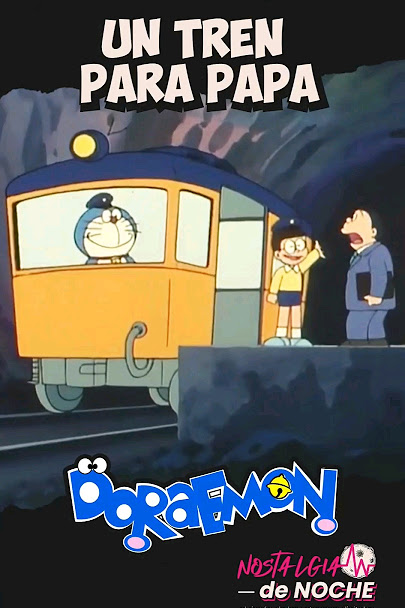
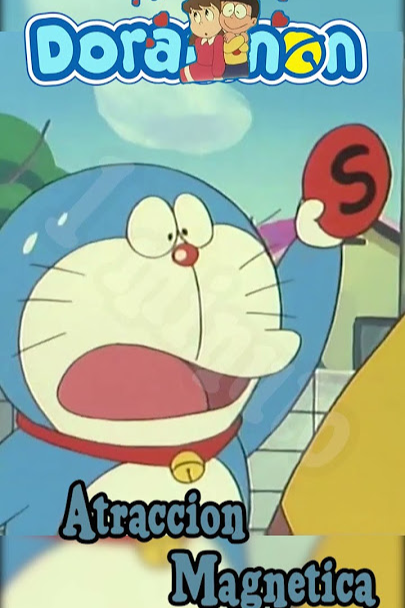

Los 10 episodios más emblemáticos de Doraemon

El nacimiento de Doraemon
Calificación: 95/100

Recuerdos de la Abuela
Calificación: 92/100

El Pueblo De Nobita
Calificación: 90/100

El Tren Del Papá De Nobita
Calificación: 87/100

Galletas De La Transformación
Calificación: 87/100
El Pan De La Memoria
Calificación: 85/100
Banderines De Peces Koi
Calificación: 82/100

Nobita Se Convierte En Niña
Calificación: 82/100

Magnetos De La Atracción
Calificación: 77/100

Muñeco Vengador
Calificación: 75/100